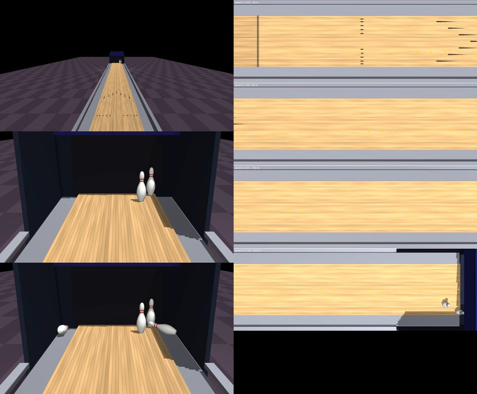

Formats
Single

One 10-frame game of ten-pin bowling under USBC rules on a regulation lane with an oiled front end and a dry back end. Each ball is a release (board, launch angle, speed, rev rate, axis rotation) chosen from the camera images; spin, friction and pin chains decide it.
MuJoCo
No robot body: each ball is a release (board, angle, speed, rev rate, axis)
Current tasks use one action level: the sport's native commands.
n = 4 matches
total 190
Target met – n = 1
total 245
Target met ✓ n = 1
total 202
Target met ✓ n = 1
total 247
Target met ✓ n = 1
Rules revision bowling-3